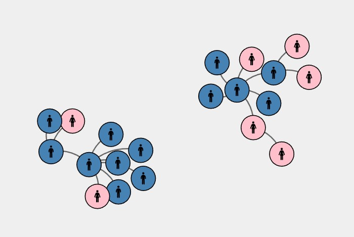

Assignment 4
Force network diagram
Setup
To be completed before 7-7-2022(Thurs) 2359hrs
- This repo link will be of the format https://<username>.github.io/CSC3007-assignment4
- In the repo create a basic index.html file, and make it visible on GitHub repo pages (it's under the settings tab, under GitHub pages).
- You can put your CSS style tags, HTML and JS script code into one file, or organize them into files/directories.
Why: Task
A force network diagram is a very good way of showing relationships between cases.
In this case, we're visualizing just a small cluster of cases (20 cases) during the Covid situation last year.
Sample screenshot of cases in sample data
What: Dataset
- A very small slice of the dataset for this Covid tracing visualization.
- You can find the assignment dataset for the cases here.
- Similarly, you can find the assignment dataset for the links here.
How: Encoding
The main visualization encoding has been chosen - force network diagram.
You are required to show which cases are male, and which are female.
Beyond that you may theme the cases and links however way you choose.
Template starter
I've included a simple template D3 starter.
A lot more basic than the previous ones, except that I've formatted the links JSON into the format the D3 requires for the force network diagram.
Extra challenge
Interactivity: tooltips to print out the information in the nodes.
Interactivity: mouse hover to show selection of nodes.
Extra, extra challenge
Add in at least one more category (use a button toggle) to visualize beyond gender, e.g. age, vaccination status, etc.
Either (and/or):
- Draw arrows on links to show chain of infection.
- Experiment with nicer links that are not just straight paths.
Grading key
- Some submission - basic force network diagram: 2 marks
- Interactivity / tooltips: 3 marks
- Additional category / links challenge: 4 marks
Questions?
Chi-Loong | V/R